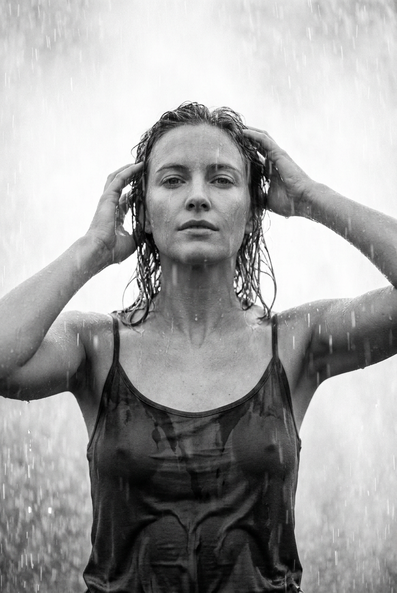
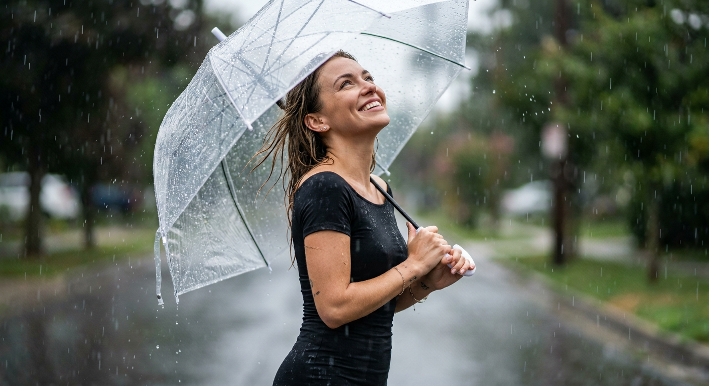
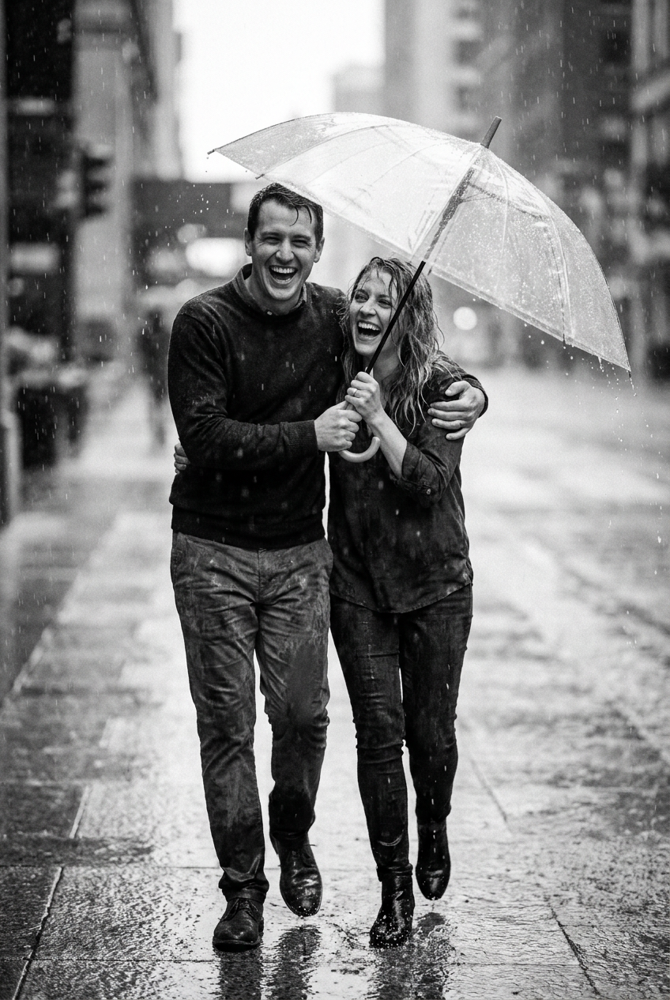
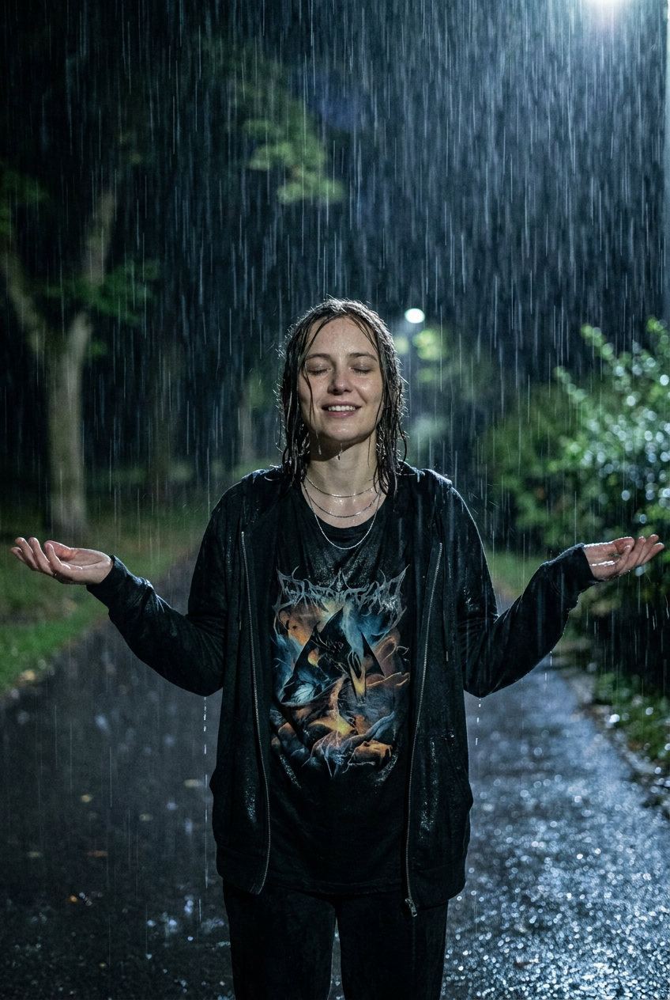
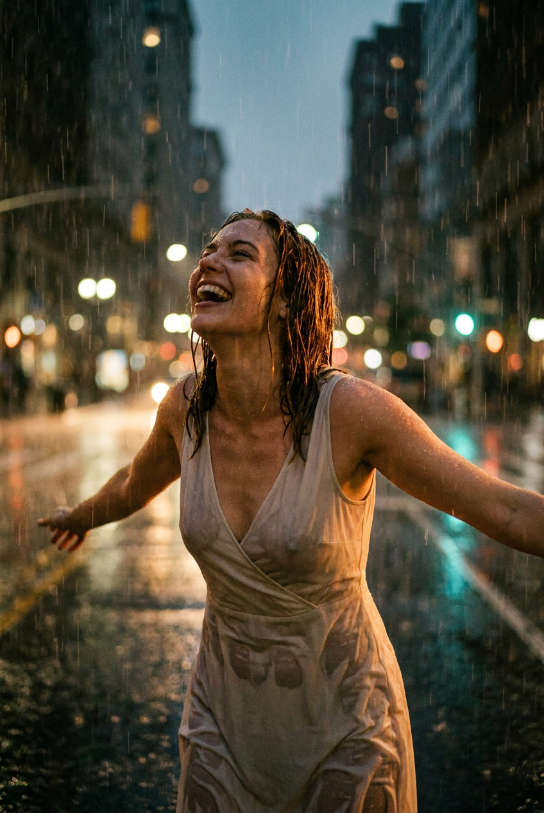
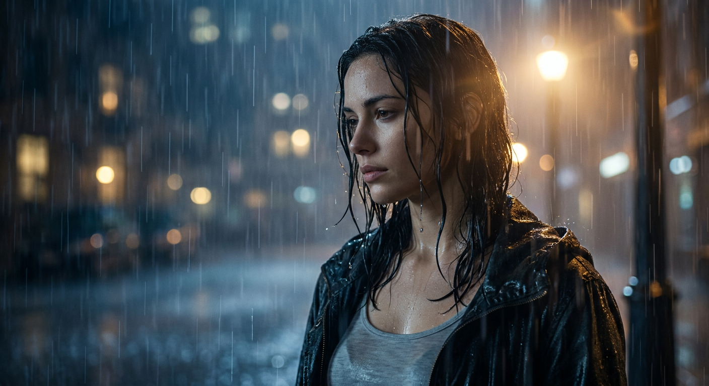
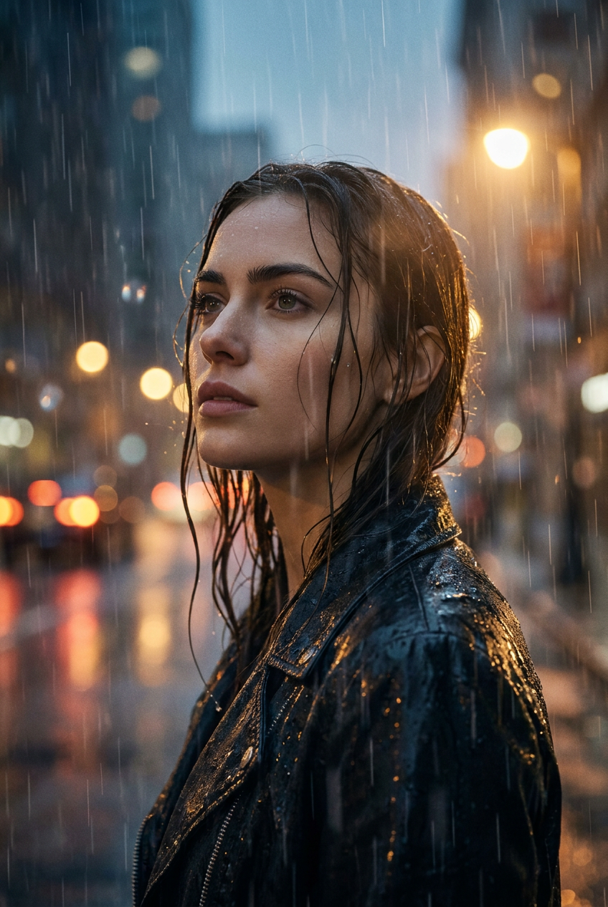
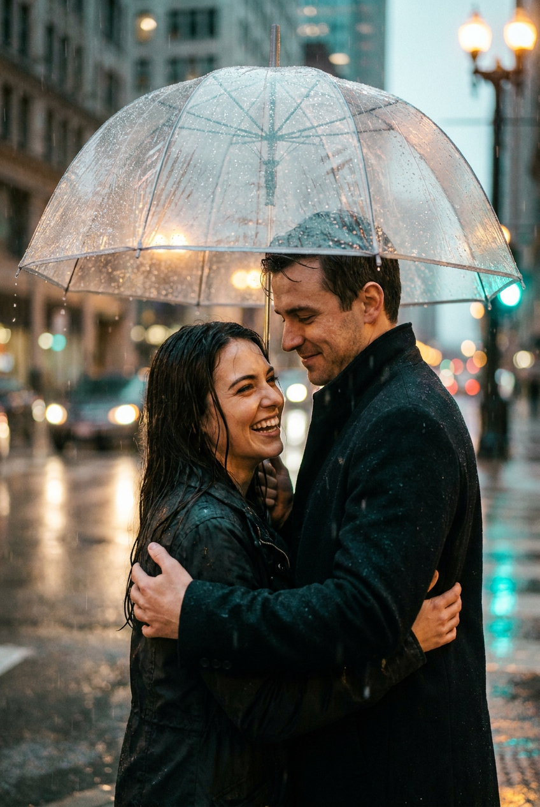

ИИ-фотосессия под дождём: 8 промптов для нейросети

Обычный портрет под дождём часто превращается в случайный набор капель, странные пальцы и сухую одежду. Генерация помогает заранее задать позу, свет, настроение и фактуру воды, чтобы получить кадр с ощущением настоящей фотосессии.
В подборке — восемь сценариев: от контрастного чёрно-белого портрета до прогулки пары под прозрачным зонтом. Здесь есть ночной парк, городские фонари, мокрый плащ, белое платье и съёмка с каплями на объективе.
Как сгенерировать такое фото: пошагово
Нужен снимок анфас при ровном свете, лицо в кадре целиком, без тёмных очков и головных уборов. Разрешение от 1000 пикселей по короткой стороне. Чем чётче исходник, тем точнее модель повторит черты.
Выберите сценарий ниже и нажмите «Копировать» — текст уйдёт в буфер целиком, вместе с командой сохранения внешности. Эта команда стоит первой строкой и отвечает за то, чтобы на выходе было ваше лицо, а не случайное.
Кнопка «Сгенерировать» рядом с каждым промптом открывает модель в новой вкладке. Nano Banana Pro работает с референсом лица — в отличие от моделей, которые генерируют портрет с нуля и узнаваемость теряют.
Промпт — в поле ввода, портрет — через загрузку референса. Порядок значения не имеет, но без референса команда сохранения внешности работать не будет: модели нечего сохранять.
Для сторис и ленты берите 9:16, для превью и обложек — 4:3. Первый результат редко идеален: если поза или свет ушли не туда, поправьте соответствующую часть промпта и запустите заново. Обычно хватает двух-трёх итераций.
8 промптов для генерации
1. Портрет под ливнем
Строго сохранить внешность по загруженному референсу: черты лица, пропорции, мимику и текстуру кожи без изменений. Вертикальный чёрно-белый кино-стилл, художественная фотография с крупным портретом девушки по пояс в центре кадра. Камера расположена фронтально, голова немного поднята, взгляд направлен прямо в объектив или чуть выше него, выражение спокойное. Обе руки подняты над головой и естественно касаются мокрых волос у висков и затылка, локти симметрично разведены, пальцы и анатомия без искажений. В кадре сильный дождь: длинные вертикальные струи, отдельные капли в воздухе и на переднем плане. По лицу и шее стекает вода, на коже видны тонкие дорожки и светлые блики. Волосы мокрые, спутанные, отдельные пряди прилипли к коже. Контрастный мягкий свет, реалистичная фактура воды, малая глубина резкости, эффект плёночной фотографии, объектив 85 мм, высокая детализация.
2. Улыбка под прозрачным зонтом

Строго сохранить внешность по загруженному референсу: черты лица, пропорции, мимику и текстуру кожи без изменений. Фотореалистичный вертикальный портрет на улице в дождливый день, средний план от головы до колен или середины торса. Девушка держит прозрачный зонт-каплю: хорошо видны полупрозрачный купол, рёбра каркаса и тонкие отражения на материале. Она слегка запрокинула голову, смотрит вверх сквозь дождь и улыбается с расслабленной, светлой эмоцией. Волосы намокли, несколько прядей выбились из-под зонта и прилипли к щекам; лёгкий ветер придаёт им естественное движение. На девушке чёрное облегающее платье с коротким рукавом или открытыми плечами, мокрая ткань блестит, на ней заметны складки и капли. Небольшие серьги-гвоздики, тонкий макияж. Дождевые линии и капли на переднем плане, мягкий дневной свет, натуральная кожа, реалистичная оптика, объектив 50 мм.
3. Пара идёт по лужам

Строго сохранить внешность по загруженному референсу: черты лица, пропорции, мимику и текстуру кожи без изменений. Вертикальный чёрно-белый film still в эстетике плёночного кино, общий план пары от колен до полного роста. Мужчина и женщина стоят на мокрой городской пешеходной дорожке из плитки или брусчатки, в центре композиции, и держат один длинный прозрачный или полупрозрачный зонт. Купол занимает верхнюю часть кадра, видны спицы, капли и блики; зонт наклонён вперёд и частично прикрывает лица и плечи. Они стоят очень близко, широко улыбаются и смеются, словно пойманы в момент движения. Поза динамичная: оба слегка наклонены вперёд, будто идут через лужи. Мужчина находится слева или чуть ближе к центру и держит зонт. На мокром покрытии отражается свет, вокруг плотный дождь, в воздухе заметны тонкие вертикальные струи. Кинематографичный контраст, лёгкое зерно, объектив 35 мм, естественная анатомия.
4. Лицом к ночному дождю

Строго сохранить внешность по загруженному референсу: черты лица, пропорции, мимику и текстуру кожи без изменений. Чёрно-белый кинематографичный кадр в сумеречной или ночной атмосфере. Девушка показана в полный рост либо крупным средним планом, корпус развёрнут, лицо дано в выразительном ракурсе 3/4 с сильным профилем. Голова слегка откинута назад, глаза закрыты или подняты к небу, на лице спокойствие и вдохновение. Сильный дождь образует хорошо различимые вертикальные струи, отдельные капли летят перед камерой. Волосы полностью промокли: пряди прилипают к щекам, шее и плечам, другие свободно развеваются от потоков воздуха, сохраняя естественную живую текстуру. На девушке свободная белая рубашка или светлое лёгкое платье с рукавами; ткань намокла, покрылась мягкими бликами и складками. Одна рука мягко согнута у корпуса, вторая расслаблена. Глубокие тени, направленный боковой свет, плёночное зерно, объектив 50 мм.
5. Принять дождь руками

Строго сохранить внешность по загруженному референсу: черты лица, пропорции, мимику и текстуру кожи без изменений. Фотореалистичный вертикальный кинематографичный кадр, ночная съёмка в парке или на аллее. Девушка стоит в центре на мокрой дорожке или асфальте, а за ней теряются в лёгком боке тёмные деревья и кусты. Она разводит руки в стороны, словно принимает ливень, ладони открыты. Глаза закрыты или чуть прищурены, на лице мягкая улыбка и ощущение спокойного удовольствия. Вокруг плотная дождевая завеса: крупные вертикальные струи, множество капель в воздухе и несколько капель на объективе. Мокрые волосы свисают вдоль щёк и шеи, отдельные пряди выбились и блестят от воды, по коже и волосам текут капли. На девушке чёрная футболка с абстрактным фэнтезийным или рок-принтом, мокрая ткань слегка липнет к телу и отражает свет. Ночные контуры, мягкий контровой свет, объектив 35 мм, малая глубина резкости, естественный motion blur на отдельных каплях.
6. Смех навстречу ливню

Строго сохранить внешность по загруженному референсу: черты лица, пропорции, мимику и текстуру кожи без изменений. Кинематографичный фотореализм, вертикальная композиция, девушка в центре переднего плана на мокрой городской улице. Она будто выбегает навстречу дождю, откинув голову назад, широко смеётся с открытым ртом; глаза могут быть полузакрыты из-за воды. Руки разведены по сторонам на уровне груди или немного ниже талии, ладони раскрыты, пальцы естественные, поза напоминает танец под ливнем. В движении допустим лёгкий motion blur на кистях и краях одежды. На девушке светлое белое платье из мягкой струящейся ткани, с V-образным вырезом или вырезом-лодочкой и свободными распахнутыми рукавами. Платье промокло, на нём видны тяжёлые складки, потемневшие участки и капли. Дождь плотный, с длинными струями и бликами, асфальт отражает городской свет. Натуральная кожа, живые эмоции, объектив 50 мм, высокая детализация.
7. Ночной портрет в мокрой куртке

Строго сохранить внешность по загруженному референсу: черты лица, пропорции, мимику и текстуру кожи без изменений. Фотореалистичный кинематографичный крупный план: в кадре плечи и голова женщины, ракурс 3/4 с лёгким профилем. Голова немного наклонена, взгляд опущен или направлен в сторону, выражение тихое и собранное. Волосы полностью мокрые, отдельные пряди прилипли к коже, с них стекает вода; влажная кожа блестит естественными бликами. На девушке светлая белая или светло-серая майка и тёмная верхняя одежда, тяжёлая от дождя, с заметными мокрыми складками. Ночная улица окутана влажной дымкой. На заднем плане рассеянное боке от далёких фонарей и окон, а несколько капель на переднем плане находятся в резком фокусе и создают глубину. Сильный ливень прорисован вертикальными линиями и отдельными каплями в воздухе. Мягкий боковой свет, холодная цветовая гамма, объектив 85 мм, малая глубина резкости.
8. Задумчивый взгляд под дождём

Строго сохранить внешность по загруженному референсу: черты лица, пропорции, мимику и текстуру кожи без изменений. Фотореалистичный вертикальный портрет девушки в дождливую ночь. Персонаж расположен слева на переднем плане, показан в 3/4 профиля и слегка повёрнут вправо. Она смотрит вверх и вдаль, лицо спокойное, задумчивое, губы расслаблены, глаза немного прищурены из-за дождя. Волосы насквозь мокрые: пряди прилипли к щекам, шее и губам, тонкие волоски выбиваются наружу и образуют линии в потоках воды. На девушке тёмный чёрный плащ или куртка с капюшоном либо без него; мокрая ткань блестит от уличного света, на плечах и рукаве видны складки и потёки. Сильный дождь состоит из чётких вертикальных струй, капли заметны на коже и одежде. Вокруг влажная дымка, на фоне ночная улица, мягкие огни фонарей и окон в боке. Натуральная кожа, кинематографичный свет, объектив 85 мм.
Что важно учесть в этом стиле
Дождь должен быть не декоративным фоном, а частью сцены. Прописывайте сразу несколько его проявлений: струи вдалеке, крупные капли перед камерой, мокрые волосы, потёки на коже и отражения на ткани. Иначе нейросеть часто оставляет персонажа сухим.
Киноэффект создают не только чёрно-белый фильтр или ночной свет. Укажите план, фокусное расстояние, направление взгляда, состояние одежды и действие в кадре. Для портрета подойдут 85 мм и малая глубина резкости, для пары на улице — 35 мм, чтобы показать пространство и движение.
Идеи для вариаций
- Перенесите сцену на остановку с запотевшим стеклом и жёлтым светом автобуса.
- Замените прозрачный зонт на старый складной с цветными спицами.
- Добавьте отражение персонажа в луже перед камерой.
- Сделайте дождь первым снегом, сохранив мокрый асфальт и ночное боке.
- Попросите нейросеть снять сцену на плёнку с лёгким зерном и засветкой по краям.
- Для более модного образа замените платье на кожаный плащ, а парк — на неоновый переулок.
Как собрать свой промпт
Начните с формата и плана: вертикальный портрет, кадр по пояс, съёмка в полный рост. Затем задайте героя, позу и эмоцию. После этого опишите дождь, одежду, локацию и свет — именно эти детали определяют сюжет, а не просто «красивую картинку».
В конце добавьте технические параметры: фокусное расстояние, глубину резкости, характер размытия, плёночное зерно или реалистичную оптику. Если используете референс лица, отдельно попросите сохранить индивидуальные черты, пропорции и естественную мимику. Для стабильного результата подготовьте 4–8 вариантов, а затем уточняйте только одну-две детали за попытку.
Ошибки, из-за которых кадр не получается
- Слишком общий дождь. Без описания струй, капель на коже и мокрой ткани осадки могут выглядеть как серые полосы на фоне.
- Смешение несовместимых планов. Не просите одновременно крупный портрет и полный рост — камера начнёт жертвовать лицом или позой.
- Перегруженная эмоция. Слова «спокойная», «громко смеётся» и «задумчивая» в одном запросе дают невыразительное лицо.
- Неуточнённый источник света. Для ночной сцены задайте фонари, контровой или боковой свет, иначе лицо провалится в тень.
- Сложная анатомия без контроля. Поднятые руки, зонты и движение требуют уточнить количество рук, положение ладоней и естественную форму пальцев.
Частые вопросы
Как сделать такое ИИ-фото бесплатно?
Попробуйте Kandinsky и Шедеврум: они подходят для текстовой генерации, но точность лица и работа с загруженным референсом могут быть нестабильными. В Krea AI и Arena.ai удобнее сравнивать варианты, однако бесплатные лимиты, очередь и доступ к референсам меняются. Для узнаваемого портрета обычно приходится сделать несколько попыток и вручную уточнить промпт.
Как сохранить лицо на нескольких кадрах?
Загрузите один качественный референс с ровным светом и без очков, а в каждом запросе повторяйте описание сохранения индивидуальных черт. Меняйте только сцену, одежду или позу. Сильный профиль, мокрые пряди на лице и закрытые глаза могут снизить сходство.
Почему нейросеть рисует сухие волосы и одежду?
Фразы «идёт дождь» недостаточно. Укажите конкретные последствия воды: пряди прилипают к коже, по шее стекают дорожки, ткань темнеет, тяжелеет и блестит, на поверхности остаются отдельные капли. Полезно также описать отражённый свет на мокрых участках.
Как сделать дождь заметным, но не закрыть лицо?
Разделите дождь по планам: тонкие струи оставьте на фоне, крупные капли добавьте по краям кадра, а лицо попросите держать в более чистой зоне резкости. Для портрета используйте 85 мм и небольшую глубину резкости, для общего плана — 35 или 50 мм.